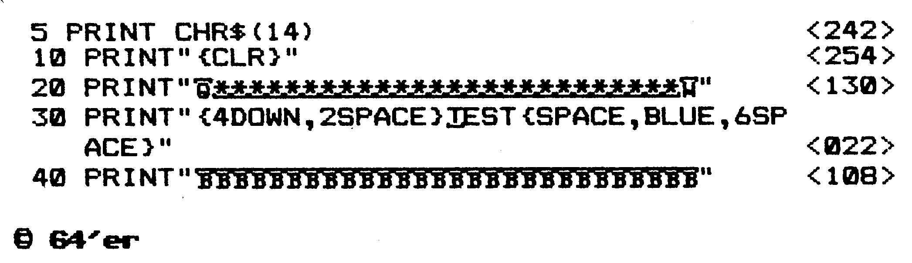
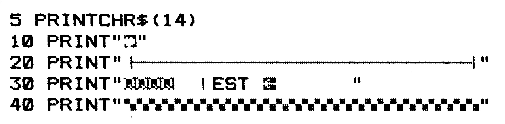

Checksummer 20 V3
Der Checksummer 20 V3 für den VC 20 überprüft jede Basic-Zeile direkt nach der Eingabe, erkennt Fehleingaben und auch Vertauschungen von Zahlen und Ziffern, und erspart deshalb eine aufwendige Fehlersuche.
Teilweiser Nachdruck aus 64'er Sonderheft 7/85, S. 6 (nur der Checksummer-Teil, für den VC 20 umgeschrieben, und die Eingabehinweise mit Tabelle 1).
Der Checksummer 20 V3 ist ein kleines Maschinenprogramm, das Sie sofort unterrichtet, ob Sie die jeweilige Programmzeile korrekt eingegeben haben.
So gehen Sie vor:
- Programm abtippen und speichern.
- Starten mit RUN
- Anschalten des Checksummer 20 V3 mit SYS 955
- Test: Geben Sie in einer freien Zeile ein: »1 REM« und drücken die RETURN-Taste. Am Bildschirm oben links sollten Sie die Prüfsumme <63> sehen.
- Geben Sie ein Listing aus unserem Heft ein. Nach jeder Zeile wird die Zahl, die im Listing in Klammern < > steht, in den Bildschirm eingeblendet. Stimmen die Zahlen nicht überein, so liegt vermutlich ein Eingabefehler vor. Die Zahl in den Klammern und auch die Klammern selbst, dürfen beim Abtippen nicht mit eingegeben werden!
- Dieser Checksummer 20 V3 bemerkt auch Vertauschungen von Zahlen und Buchstaben.
- Abschaltung wird mit »SYS 58459« vollzogen.
Achtung: Nehmen Sie keine Kassetten-Operationen vor, wenn der Checksummer VC 20 eingeschaltet ist. Da das Betriebssystem den Kassettenpuffer mit Daten belegt, kann der Checksummer VC 20 überschrieben werden. Wollen Sie deshalb ein Programm auf (von) Kassette speichern (laden), so müssen Sie erst den Checksummer VC 20 abschalten.
Als Sicherung wird bei der Initialisierung geprüft, ob das zuletzt angesprochene Peripherie-Gerät der Kassettenrecorder war. Ist das der Fall, so werden die Betriebssystemroutinen LOAD und SAVE für die Benutzung gesperrt. Der Computer meldet bei Aufruf einer dieser beiden Routinen READY, ohne weitere Aktionen durchzuführen. Diese Sicherung kann man nach der Tipparbeit aufheben, wenn man den Checksummer VC 20 mit SYS 58459 abschaltet. Weiterhin wird dann durch gleichzeitiges Drücken der Tasten »Run-Stop & Restore« erreicht, daß die Betriebssystemroutinen LOAD und SAVE wieder eingerichtet werden.
— Bei Benutzung einer Diskettenstation brauchen Sie nicht darauf zu achten, daß bei LOAD beziehungsweise SAVE der Checksummer VC 20 überschrieben wird, da der Kassettenpuffer für die Diskettenstation normalerweise nicht genutzt wird. Deshalb können Sie die beiden Routinen weiterhin normal nutzen, sofern der Computer bei der Initialisierung des Checksummer VC 20 feststellt, daß das zuletzt angesprochene Peripherie-Gerät nicht der Kassettenrecorder war.
— Wird eine Zeile gelöscht, also eine Zahl zwischen 0 und 65999 eingegeben und danach Return gedrückt, so wird eine Checksumme ausgegeben, die aber keine Bedeutung hat.
Sie können die Programme auch weiterhin ohne den Checksummer eintippen.
(F. Lonczewski/gk)Hinweis: {13 SPACE} bedeutet 13mal die Leertaste drücken
Wie unsere Basic-Programme einzugeben sind
Unsere Basic-Listings enthalten keine Steuerzeichen mehr. Diese werden ersetzt durch Klartext und stehen zwischen geschweiften Klammern. Deshalb sind weder die Klammern noch was dazwischen steht, abzutippen, sondern die in Tabelle 1 aufgeführten Tasten zu drücken. Auf Ihrem Bildschirm erhalten Sie dann wieder die entsprechenden Grafikzeichen (siehe Bild 1 und 2).


CTRL steht für Control-Taste, so bedeutet [CTRL-A], daß Sie die Control-Taste und die Taste »A« drücken müssen. Im folgenden steht:
| {DOWN} | Taste neben rechtem Shift, Cursor unten |
| {UP} | Shift-Taste & Taste neben rechtem Shift; Cursor hoch |
| {CLR} | Shift-Taste & 2. Taste ganz rechts oben |
| {INST} | Shift-Taste & Taste ganz rechts oben |
| {HOME} | 2. Taste von ganz rechts oben |
| {DEL} | Taste ganz rechts oben |
| {RIGHT} | Taste ganz rechts unten |
| {LEFT} | Shift-Taste & Taste unten rechts |
| {SPACE} | Leertaste |
| {F1} | grauer Tastenblock rechts |
| {F3} | grauer Tastenblock rechts |
| {F5} | grauer Tastenblock rechts |
| {F7} | grauer Tastenblock rechts |
| {F2} | grauer Tastenblock rechts & Shift |
| {F4} | grauer Tastenblock rechts & Shift |
| {F6} | grauer Tastenblock rechts & Shift |
| {F8} | grauer Tastenblock rechts & Shift |
| {RETURN} | Shift-Taste & Return |
| {BLACK} | Control-Taste & 1 |
| {WHITE} | Control-Taste & 2 |
| {RED} | Control-Taste & 3 |
| {CYAN} | Control-Taste & 4 |
| {PURPLE} | Control-Taste & 5 |
| {GREEN} | Control-Taste & 6 |
| {BLUE} | Control-Taste & 7 |
| {YELLOW} | Control-Taste & 8 |
| {RVSON} | Control-Taste & 9 |
| {RVOFF} | Control-Taste & 0 |
| {ORANGE} | Commodore-Taste & 1 |
| {BROWN} | Commodore-Taste & 2 |
| {LIG.RED} | Commodore-Taste & 3 |
| {GREY 1} | Commodore-Taste & 4 |
| {GREY 2} | Commodore-Taste & 5 |
| {LIG.GREEN} | Commodore-Taste & 6 |
| {LIG.BLUE} | Commodore-Taste & 7 |
| {GREY 3} | Commodore-Taste & 8 |
Wenn Sie sich erst einmal an die in Klartext geschriebenen Steuerzeichen gewöhnt haben, werden Sie den Vorteil dieser Schreibweise erkennen. Der zu dem jeweiligen Steuerzeichen gehörende Klartext ist so verfaßt, daß Sie leicht die Taste beziehungsweise die Tastenkombination finden, die Sie drücken müssen.
Alle Grafikzeichen werden ebenfalls ersetzt durch unterstrichene oder überstrichene Großbuchstaben.
Unterstrichene Buchstaben bedeuten, daß Sie die SHIFT-Taste und den angegebenen Buchstaben drücken müssen, überstrichene jedoch die Commodore-Taste mit dem Buchstaben.
Auch hier erhalten Sie am Bildschirm das entsprechende Grafikzeichen und nicht etwa das im Listing erkennbare Zeichen (siehe Bild 1 und 2).
Die Leerzeichen zwischen den einzelnen Basic-Befehlen können beim Abtippen entfallen (ohne Einfluß auf die Checksumme zu nehmen). Dies ist besonders bei speicherkritischen Programmen wichtig.
Ebenso müssen Zeilen, die mehr als 80 Zeichen pro Zeile enthalten, mit den bekannten Abkürzungen für die Basic-Befehle (siehe auch das Handbuch zum C 64, Anhang D, Seite 130) eingegeben werden.